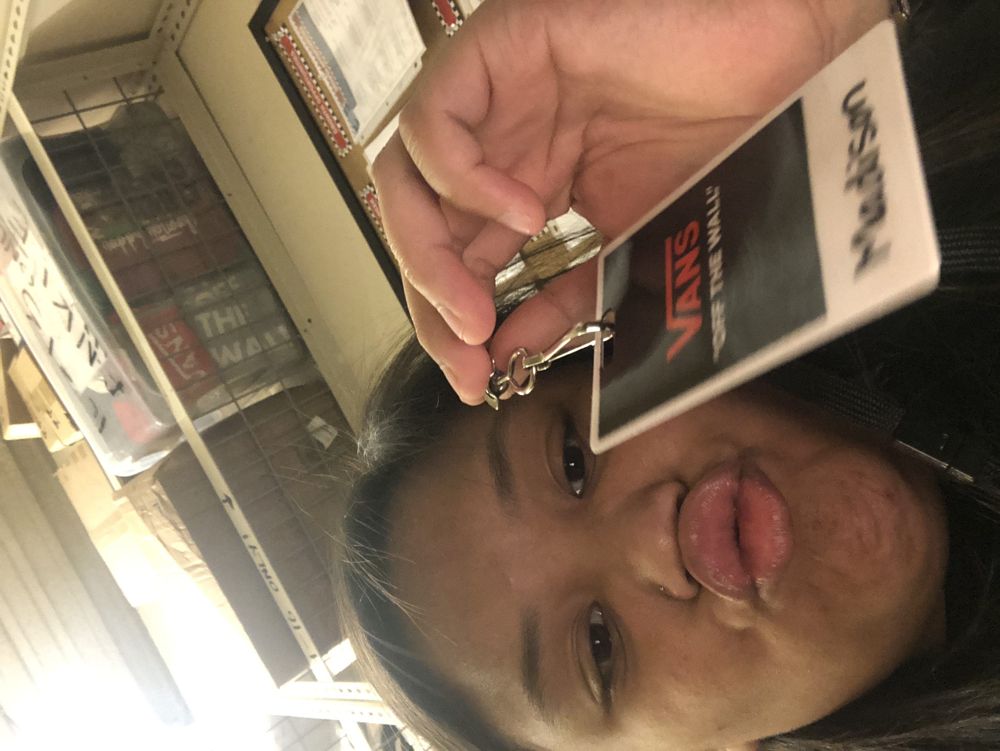
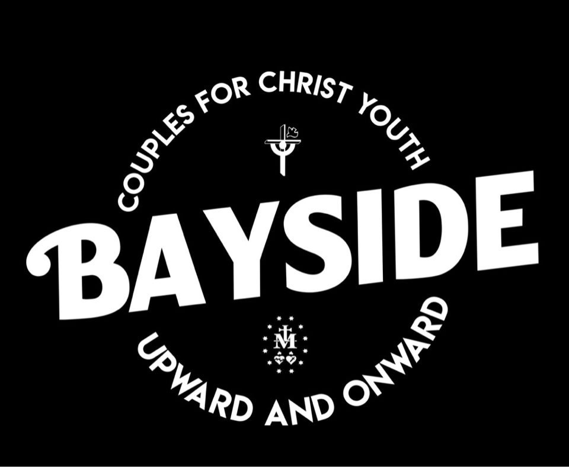
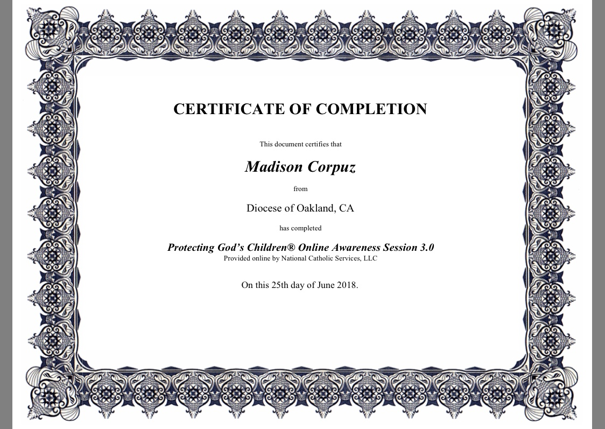

Portfolio




My name is Madison Jordan Corpuz. I am nineteen years old and a second-year Education Major at University California, Riverside. I was born and raised in Northern California, specifically in San Jose, California. In the future, I hope to live in Texas and own a lot of lands and a horse. I did not start working until I graduated from high school, but I feel that my current work experience is enough for me to keep building my job experience. My time at University California, Riverside is opening me up to much different work/ job opportunities, but I have yet to explore. Though I have not started working anywhere near my college, my previous work experience is able to provide me a boost to my resume. My work experience goes hand-in-hand with my major because I have worked in a classroom with kids for the last two summers. My first summer teaching, I taught seventh grade English and the second summer I taught fifth-grade math. Though it is tough to maintain a classroom of thirty+ students, the job experience was rewarding because I was able to be apart of young student's formative years. Overall, I really enjoyed my time summer teaching, and I hope to continue to teach summer classes until I am unable to anymore. Education is important to me because it helps set the foundation for the future. I was able to open doors for students and allow them to create their own way of thinking. I was able to provide the tools they needed to think creatively and critically about our world. Students inspire teachers, not the other way around. Aside from summer teaching, I held a job at a Vans shoe store. I enjoyed working retail because it allowed connecting with people I never would have otherwise met. Vans taught me a lot about customer service, thankfully, I never got any rude customers. Vans brought me out of my comfort zone. Since coming to college, I have become more introverted, but since working at Vans, I am less afraid to make the first move when approaching people. Vans allowed me to be more personable and talkative. I would say one of my strengths is that I am resourceful— it does not take much to teach me and I can be left to my own devices; I am able to make do with what I have. I believe that I am able to mold myself to any task and adapt at any time. I take order and direction well; if something needs to get done I will do it. Currently, I am looking for a job the expands my portfolio, something that will boost my professional career. I look forward to expanding my work portfolio and hopefully build professional relationships. With what I am currently pursuing as my degree, Education, I will be flexible with any job. I do not have a set career path, but I am open to anything. Thank you for visiting my page.
• Taught 5th and 7th grade classes
• Looked after 30 kids during field trips
• Graded papers
• Gave personal testimonies about me relationship with God
• Conducted small groups
• Stayed in contact with parents during retreats
• Organized paperwork